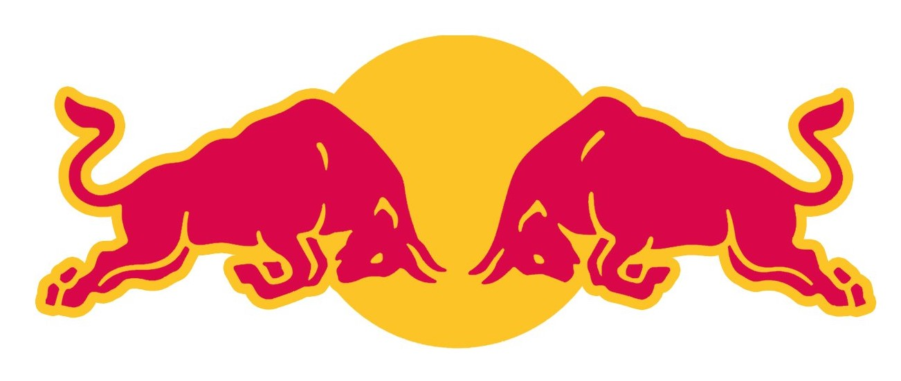
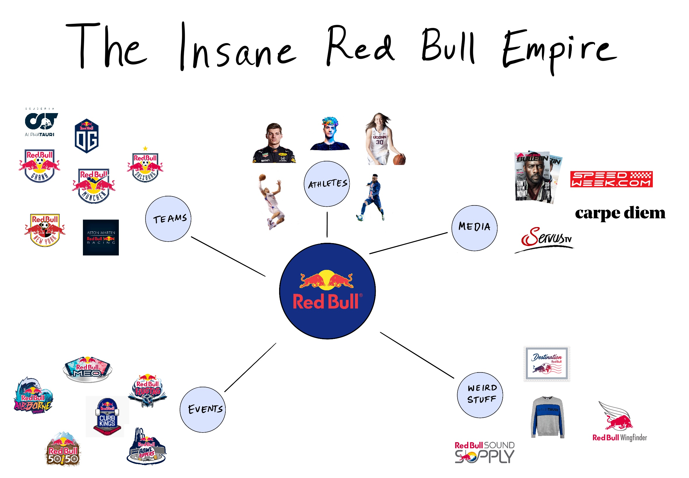

Podjetje Red Bull je multinacionalka, specializirana za proizvodnjo in prodajo energijskih pijač. Ustanovljeno je bilo leta 1984 v Avstriji s strani Dietricha Mateschitza. Njihov najbolj znan izdelek je istoimenska energijska pijača Red Bull, ki je postala priljubljena po vsem svetu. Red Bull energijska pijača je sestavljena iz kombinacije sestavin, kot so kofein, taurin, B-vitamini, sladkorji in arome. Pijača je namenjena zagotavljanju energije, povečanju vzdržljivosti ter izboljšanju koncentracije in budnosti. Podjetje Red Bull je postalo globalna znamka in je prisotno v več kot 170 državah. Prodajajo več kot 6 milijard pločevink energijske pijače letno. Red Bull je postal prepoznaven simbol vitalnosti, dinamičnosti in aktivnega načina življenja. Poleg proizvodnje in prodaje energijskih pijač je Red Bull dejaven tudi na drugih področjih, kot so šport, kultura in medijska produkcija. Podjetje sponzorira in organizira različne športne dogodke, vključno z dirkanjem Formule 1, motokrosom, padalstvom, deskanjem na snegu in drugimi ekstremnimi športi. Prav tako je lastnik športnih in kulturnih ekip ter prireja lastne dogodke, kot so Red Bull Air Race in Red Bull Rampage. Red Bull je prisoten tudi v medijski industriji preko platforme Red Bull Media House, kjer ustvarjajo in promovirajo vsebine, kot so filmi, dokumentarci, glasba in športni dogodki. Podjetje je znano po svojem slogu inovativnosti ter spodbujanja ljudi, da presegajo meje in uživajo v aktivnem življenju. V skladu s svojo filozofijo, Red Bull stremi k ustvarjanju edinstvenih in navdihujočih izkušenj ter krepitvi svoje blagovne znamke kot simbola energije, poguma in uresničevanja ciljev.
Red Bull je bilo ustanovljeno leta 1984 v Avstriji s strani podjetnika Dietricha Mateschitza. Ideja za energijsko pijačo se je porodila Mateschitzu, ko je obiskal Tajsko in odkril tamkajšnjo energijsko pijačo, ki je bila priljubljena med vozniki tuk-tukov. Navdušen nad njenimi učinki, se je odločil razviti podobno pijačo za mednarodni trg. Skupaj z avstrijskim podjetnikom Chaleo Yoovidhyo je Mateschitz začel proizvodnjo in trženje Red Bull energijske pijače. Leta 1987 so prvič prodali Red Bull na avstrijskem trgu. Pijača je hitro pridobila priljubljenost zaradi svojega edinstvenega okusa in obljube o povečanju energije in vzdržljivosti. V naslednjih letih se je Red Bull začel širiti na mednarodne trge. Leta 1992 so vstopili na trg na Nizozemskem, nato pa so se hitro razširili po Evropi. S strategijo agresivnega trženja, ki je vključevala sponzorstva športnih in kulturnih dogodkov ter ustvarjanje zanimivih marketinških kampanj, se je blagovna znamka Red Bull hitro uveljavila po vsem svetu. V letu 1997 so se odločili vstopiti na trg Združenih držav Amerike. S svojo inovativno marketinško strategijo, ki je vključevala organizacijo ekstremnih športnih dogodkov, kot je Red Bull Flugtag, in sponzorstvo znanih športnikov, so uspeli pridobiti pozornost ameriškega trga in postati eno izmed najbolj priljubljenih energetskih pijač v državi. Red Bull je v naslednjih letih še naprej širil svojo prisotnost po vsem svetu. Danes je podjetje prisotno v več kot 170 državah in prodaja več milijard pločevink energijske pijače letno. Red Bull je postal prepoznavna globalna blagovna znamka, ki je znana po svoji zgovorni promociji, inovacijah ter podpori športu, kulturi in medijski produkciji.
Podjetje Red Bull je lastnik več podjetij, ki delujejo v različnih panogah. Nekatera izmed njih vključujejo: Red Bull GmbH: To je matično podjetje, ki proizvaja in trži Red Bull energijsko pijačo ter upravlja z blagovno znamko Red Bull. Red Bull Media House: To podjetje se ukvarja s produkcijo in distribucijo vsebin, vključno z dokumentarci, kratkimi filmi, televizijskimi oddajami, glasbo in drugimi medijskimi vsebinami. Red Bull Media House je specializirano za šport, kulturo, glasbo in avanturo. Red Bull Records: Gre za založbo, ki je specializirana za glasbeno industrijo. Podjetje izdaja in promovira glasbene izvajalce ter se osredotoča na alternativno, rock, pop in elektronsko glasbo. Red Bull TV: Je digitalna televizijska platforma, ki ponuja vsebine v živo in na zahtevo. Na Red Bull TV lahko gledate športne dogodke, glasbene festivale, dokumentarce in druge ekskluzivne vsebine. Red Bull Air Race GmbH: To podjetje je odgovorno za organizacijo in izvajanje svetovnega prvenstva v dirkanju z letali, imenovanega Red Bull Air Race. Tekmovanje vključuje vrhunske pilot in poteka na različnih prizoriščih po svetu. Red Bull Racing: Gre za moštvo Formule 1, ki tekmuje v svetovnem prvenstvu. Red Bull Racing je doseglo velik uspeh in osvojilo več naslovov svetovnih prvakov. Poleg teh podjetij ima Red Bull tudi v lasti številne druge blagovne znamke, s katerimi se ukvarja v različnih sektorjih, kot so ekstremni športi, esporti, dogodki in druge dejavnosti.
